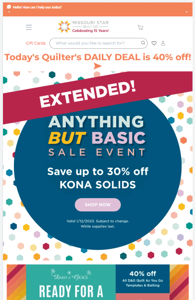
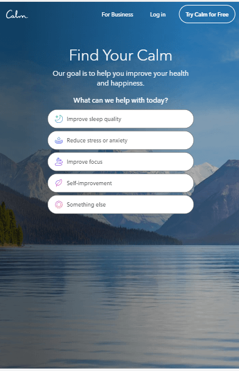
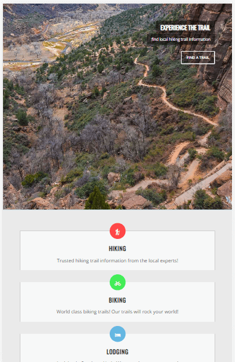

Visual Hierarchy
Missouri Star Quilt Co.
https://www.missouriquiltco.com/ I picked this particular website to show the principle of visual hierarchy. You can see by the bold font and bright colors on the ad for their sale, that this is the first thing the company wants you to look at. It has great contrast that directs your vision to that spot, using capital letters and exclamation points to help the viewer understand the importance of this sale. The straight lines cutting off the top of the round shape in a dramatic way makes the eye focus on that point. Then with the bold change in the font color to yellow draws the viewers eye in even further telling them to read this ad before anything else.
White Space
Calm
https://www.calm.com/ This website is a great example of the design principle of white space. Each heading element is separated beautifully, helping the viewer read clearly the text. Each button element is consistently spaced with room to view the amazing scene in the background. The designer really got the message of peace and tranquility across with not only the imagery but also the spatial awareness around each element. This web design fits perfectly the product that this website is trying to selling. Telling the viewer there is space to move, space to breathe, space to grow. There is definitely no crowding here.
Repetition
Hike Saint George
https://hikestgeorge.com/ This website does a great job at showing the design principle of repetition. You can see that by the repeated design in the box style, icons, link fonts, and one-line paragraphs. Everything is clean and consistent and aligned just right. The contrast is repeated throughout along with the beautiful crisp photography that hooks the viewer and pulls them in at the top of each page. The repetition in this website makes the viewer feel calm and comfortable knowing that they can explore this website with confidence and not get lost in a mess of links and pages. Each page flows into the next effortlessly without any surprises due to the consistent repetition in the design.